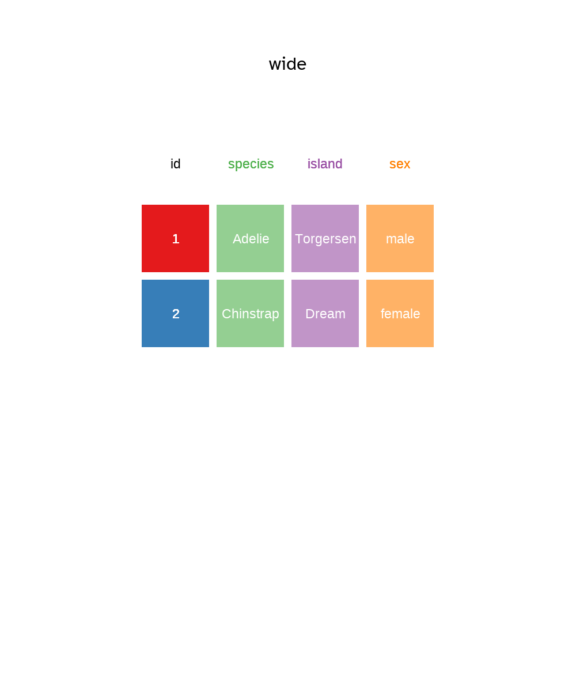

penguins |>
count(species)3 Data wrangling I
3.1 Organising your data in spreadsheets
Data Organization in Spreadsheets by Karl W. Broman & Kara H. Woo is full of practical advice and context. It is well worth reading for helping you think about best practices for organising your data for yourself, and when working with others.
3.1.1 Plain formats and Excel files
File formats like .csv and .tsv, comma separated variables and tab separated variables respectively are plain text files. That is to say they contain only the data, as text information, and are the simplest and most convenient way to share data as lots of software, including Excel, can read and interpret them.
Excel files saves files into its own proprietary format .xls or .xlsx that holds information in addition to the data itself (metadata). For reading and writing excel files in R, tidyverse readxl package is the place to start: readxl homepage.
3.2 The pipe |>
The pipe operator |> allows you to combine operations by passing the output of an object or function to another. It will make more sense why this is a good thing once we start writing code, but you can think of it as a coding adverb such as then.
In the example below, the penguins dataframe is piped to the count function which has species as its argument. Think of it as: Return the penguins table then count how many rows there are for each species.
Pipe style
The recommended pipe style is a space before a pipe and the pipe to be the last thing on a line, like so:
This makes reading and adding new steps easier.
The pipe |> was added to R as of version 4.1.0 , you may see the %>% pipe from the magrittr package sometimes, but it’s simpler to use the native version. However, you may need to check the native pipe is enabled in the Options (Figure 3.1).

|> option in RStudio
The shortcut for the pipe operator is Ctl+Shift+M on Windows or Cmd+Shift+M on a Mac.
3.3 Introducing dplyr
dplyr “is a grammar of data manipulation”. Concretely, it’s a package of functions from the tidyverse that have been created for tasks that require manipulation of data stored in data frames Section 2.9.3.
As mentioned in Section 2.6, the grammar is the naming of the functions as verbs. Personally, I find this parallel between R code and human language makes things cognitively easier for me. I can describe what I want to do using natural language and translate it easily into tidyverse code.
dplyr?
3.4 The four most common dplyr verbs
We’ll use the four most common verbs in dplyr to examine the Palmer Penguins data (Section 2.4.1).
3.4.1 Filter rows with filter()
To remind you, the penguins data frame has 344 rows (Section 2.4.1). Each row contains a set of observations contained in the columns for a single penguin from one of three species (Figure 2.6) living on one of three islands.
So if for example we wanted to filter the data frame for only the rows of penguins with a bills longer or equal to 50 mm, we would use the filter function as shown in Figure 3.3.
The function takes the penguins data frame object as the first argument. Either within the parentheses or via a pipe.
The second argument is the column (variable) we wish to filter on, in this case bill_length_mm and a logical expression (evaluates as TRUE or FALSE) that is the filter.
Here the expression is greater or equal to 50 >= 50.
So any row with a value in bill_length_mm greater or equal to 50 is TRUE and is retained and any row with a value less than 50 is FALSE and is discarded.

dplyr filter function. The filter function returns rows from your data frame that satisfy your filter expression as TRUE. Here it will return all Palmer Penguins with a bill longer or equal to 50 mm. Here it shows how filter will return all Palmer Penguins with a bill longer or equal to 50 mm. The function can either be used by providing the penguins data.frame as the first argument to the function or by passing the penguins data frame via a pipe.
Here is the code, note that I’ve piped the output to the dplyr glimpse() function which provides a summary of the filtered data frame contents.
Instead of a table of 344 penguins, we’ve returned a data frame with the 57 penguins (rows) that have bills equal or longer than 50 mm, but we still have 8 columns (variables) as filter() only acts on the rows.
penguins |>
filter(bill_length_mm >= 50) |>
glimpse()Rows: 57
Columns: 8
$ species <fct> Gentoo, Gentoo, Gentoo, Gentoo, Gentoo, Gentoo, Gent…
$ island <fct> Biscoe, Biscoe, Biscoe, Biscoe, Biscoe, Biscoe, Bisc…
$ bill_length_mm <dbl> 50.0, 50.0, 50.2, 50.0, 59.6, 50.5, 50.5, 50.1, 50.4…
$ bill_depth_mm <dbl> 16.3, 15.2, 14.3, 15.3, 17.0, 15.9, 15.9, 15.0, 15.3…
$ flipper_length_mm <int> 230, 218, 218, 220, 230, 222, 225, 225, 224, 231, 22…
$ body_mass_g <int> 5700, 5700, 5700, 5550, 6050, 5550, 5400, 5000, 5550…
$ sex <fct> male, male, male, male, male, male, male, male, male…
$ year <int> 2007, 2007, 2007, 2007, 2007, 2008, 2008, 2008, 2008…Filtering can be done using multiple columns and expressions.
3.4.2 Arranging rows with arrange()
Another row verb is arrange() which as the name suggests arranges the rows according to column values.
penguins |>
head() species | island | bill_length_mm | bill_depth_mm | flipper_length_mm | body_mass_g | sex | year |
|---|---|---|---|---|---|---|---|
Adelie | Torgersen | 391 | 187 | 181 | 3750 | male | 2007 |
Adelie | Torgersen | 395 | 174 | 186 | 3800 | female | 2007 |
Adelie | Torgersen | 403 | 180 | 195 | 3250 | female | 2007 |
Adelie | Torgersen | NA | NA | NA | NA | NA | 2007 |
Adelie | Torgersen | 367 | 193 | 193 | 3450 | female | 2007 |
Adelie | Torgersen | 393 | 206 | 190 | 3650 | male | 2007 |
penguins |>
arrange(flipper_length_mm) |>
head()species | island | bill_length_mm | bill_depth_mm | flipper_length_mm | body_mass_g | sex | year |
|---|---|---|---|---|---|---|---|
Adelie | Biscoe | 379 | 186 | 172 | 3150 | female | 2007 |
Adelie | Biscoe | 378 | 183 | 174 | 3400 | female | 2007 |
Adelie | Torgersen | 402 | 170 | 176 | 3450 | female | 2009 |
Adelie | Dream | 395 | 167 | 178 | 3250 | female | 2007 |
Adelie | Dream | 372 | 181 | 178 | 3900 | male | 2007 |
Adelie | Dream | 331 | 161 | 178 | 2900 | female | 2008 |

dplyr arrange function. The arrange function orders rows from your data frame according to column variables. Here it will order the Palmer Penguins data.frame according to their flipper length. The function can either be used by providing the penguins data.frame as the first argument to the function or by passing the penguins data.frame via a pipe.
3.4.3 Selecting columns with select()
dplyr select function. This function selects columns from your data frame. Here it will select the island and year columns from Palmer Penguins data.frame. The function can either be used by providing the penguins data.frame as the first argument to the function or by passing the penguins data.frame via a pipe.
3.4.4 Creating new columns with mutate()

dplyr mutate function. The mutate function creates new column variables in your data frame. Here mutate creates a new variable called body_mass_kg in the Palmer Penguins data.frame by dividing the values in the body_mass_g column by 1000 and storing the answer in new variable body_mass_kg. The function can either be used by providing the penguins data.frame as the first argument to the function or by passing the penguins data.frame via a pipe.
3.5 Creating grouped summaries with dplyr
penguins |>
summarise(mean_mass_g = mean(body_mass_g,na.rm = TRUE), n_penguins = n())# A tibble: 1 × 2
mean_mass_g n_penguins
<dbl> <int>
1 4202. 344penguins |>
group_by(species) |>
summarise(mean_mass_g = mean(body_mass_g,na.rm = TRUE), n_penguins = n())# A tibble: 3 × 3
species mean_mass_g n_penguins
<fct> <dbl> <int>
1 Adelie 3701. 152
2 Chinstrap 3733. 68
3 Gentoo 5076. 1243.5.1 Using group_by() and summarise() together
3.6 Pivots

